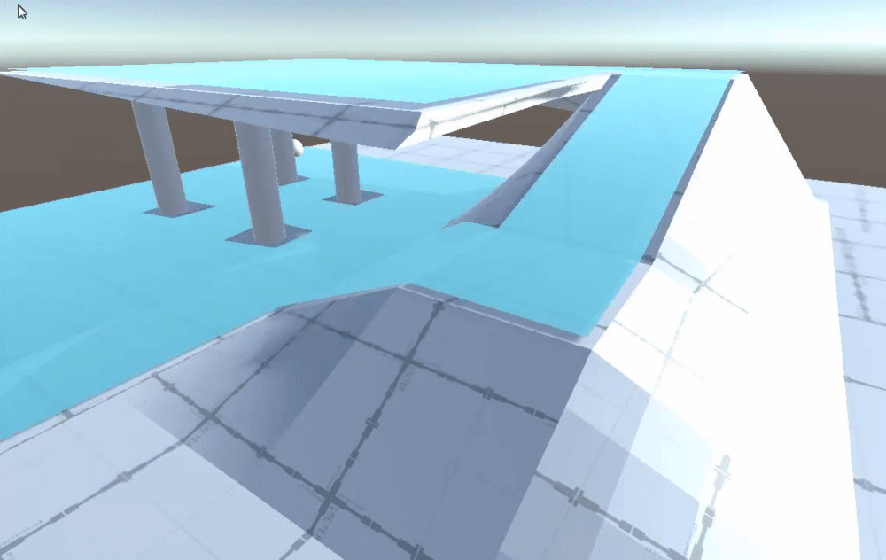

Projects

A local/online multiplayer platformer game with the ultimate goal of finding out which one of you
and your friends can give the best bath!
Made with Unreal Engine 4
Available for free on Steam!
My Contributions!
- Lead Programmer
- Programming the Player Movement
- Animation Programming
- Organizing Programmer Meeting and Helping with General Programming Tasks
An intense Twin Stick Bullet Hell where it is your job to get rid of Demons that have made there way out of Hell.
Made with Unity
Available for free on Itch.io!
My Contributions!
- Programmed Player Movement, Bullet Patterns, Boss AI, Menus, Audio Behaviour, and Tutorial
- Drew Unique Art Assets that drip with style!
A tool for the Unity Engine that allows users to create NavMeshes and generate believable AI routes.
It is still in development and unreleased, but is progress on it has been consistent and fast!
Made with Unity
My Contributions!
- Tool for users to create their own Navigation Meshes
- A Star path finding which finds the most optimal route in a set of Nodes on a Mesh
- My own original Path Smoothing like Algorithm (still don't know what to call it) where a set of points on a mesh can be both optimized and made to be a much more believable (no zig zagging ai!)

You can create new triangles on the Mesh by clicking on the edge and dragging.
Merging Points on the Mesh is as simple as dragging your desired point over the point you want to merge with!

PathFinding is done by treating each triangle on the mesh as a potential PathNode
The Black Line represents the most straight away path through the triangles

The AI unit will smoothly follow the vertices on the path!
A local/online Smash Brothers like game with a twist in that players are only able to use their special abilities once per round. Made for the 2018 Touhou Game Jam.
Made with Unity
Available for free on Itch.io!
My Contributions!
- Physics Programming
- Attack/Animation Programming
- Network Programming